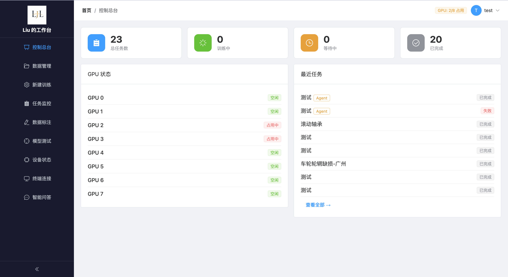
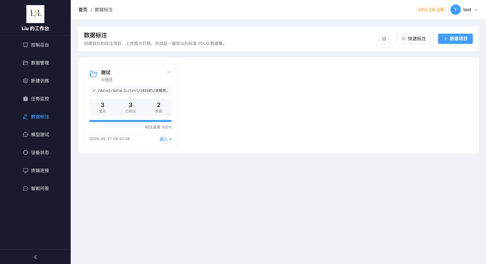
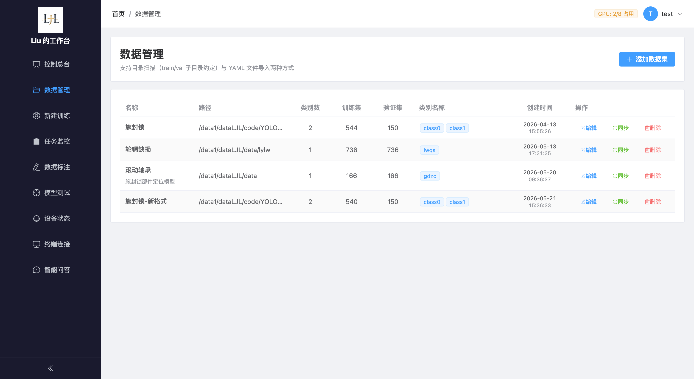
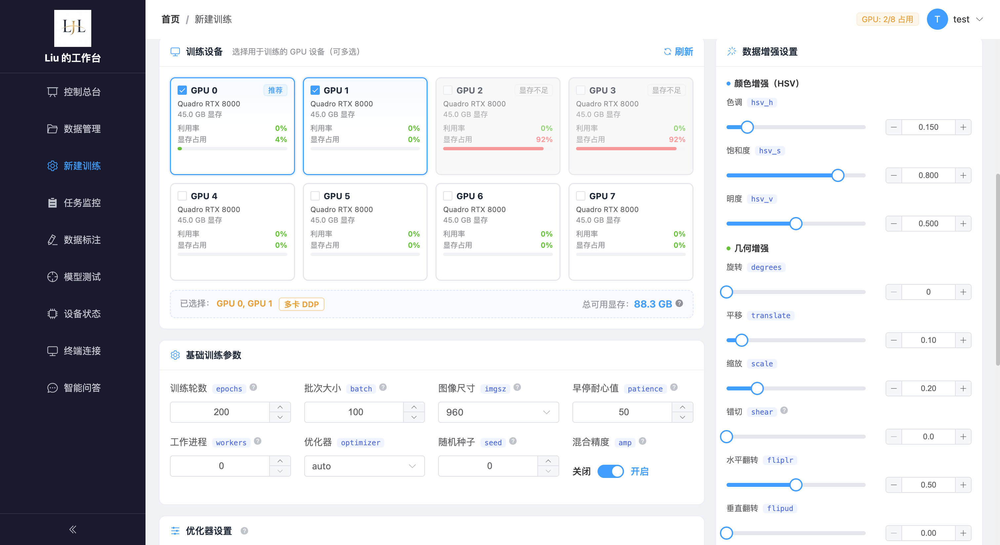
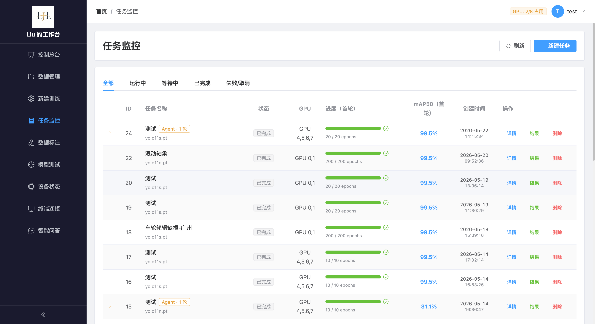
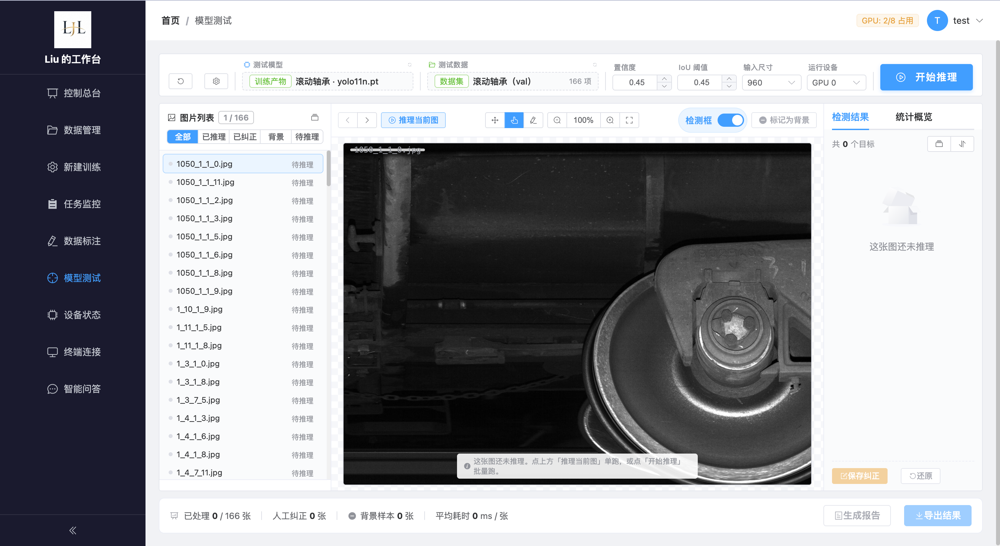
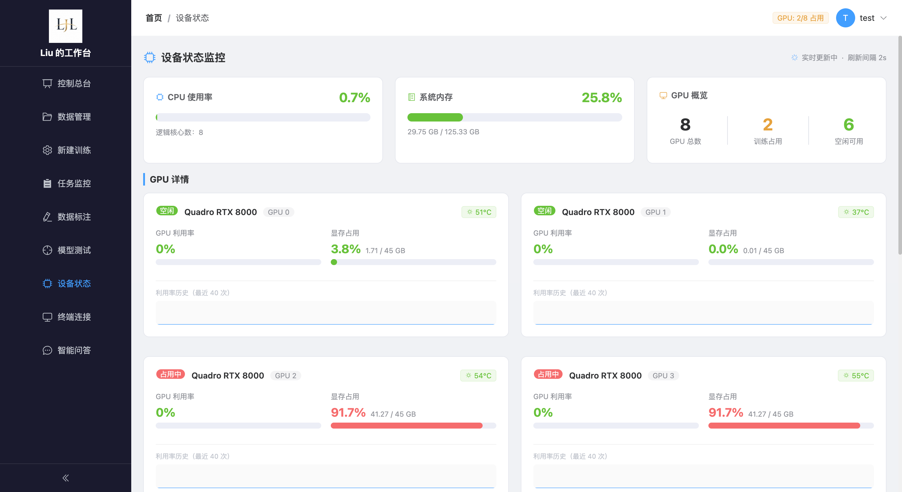
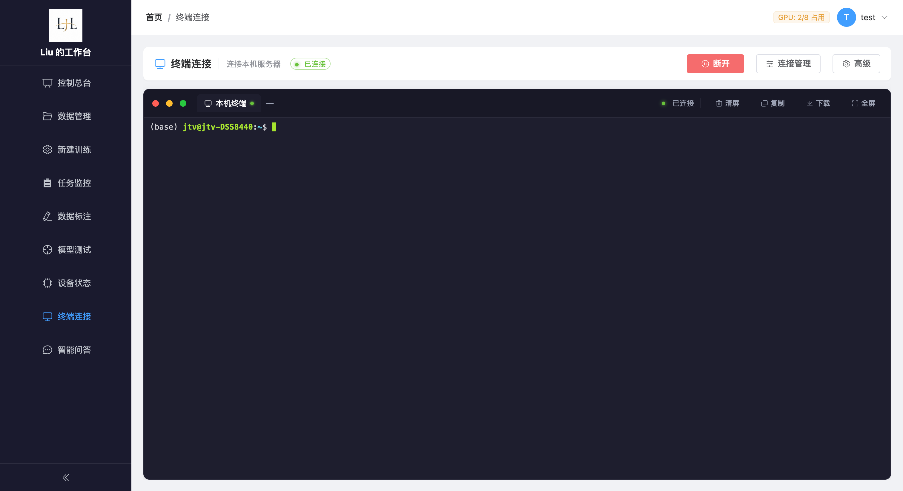
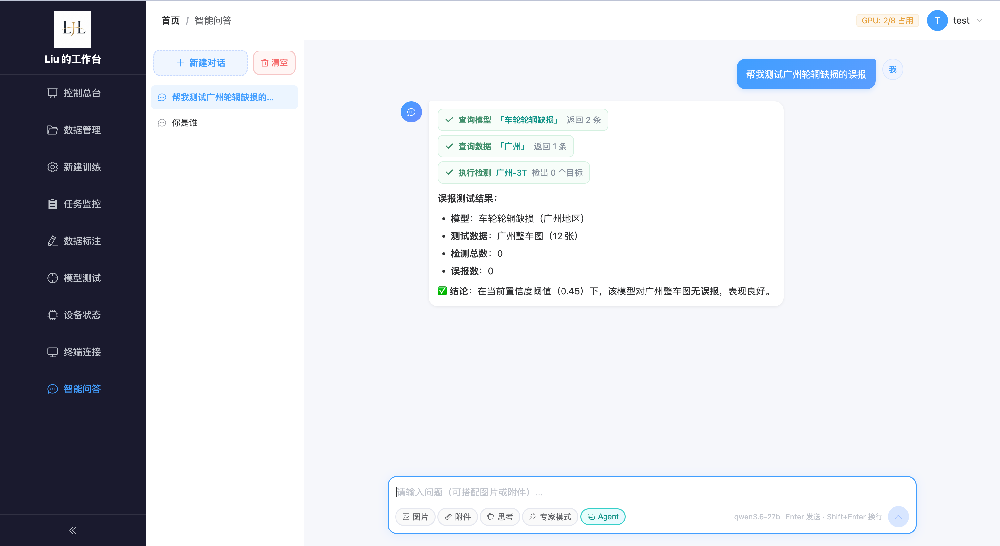

标注到导出
从图片管理、矩形框标注到 YOLO 数据集导出，先把训练材料准备好
Local Vision Model Workbench
围绕 YOLO 训练的本地工作台，覆盖数据准备、训练配置、任务监控、结果复盘、模型测试和智能问答

What Stands Out
从图片管理、矩形框标注到 YOLO 数据集导出，先把训练材料准备好
配置模型、数据集和训练参数后进入队列，由平台分配空闲设备并实时推送日志
训练曲线、混淆矩阵、权重文件和 AI 报告一起归档，方便比较每一轮表现
复盘之后继续追问，Agent 可查模型、查数据，并调用检测工具验证样本
Workflow
数据标注
图片管理、矩形框标注、类别维护和 YOLO 数据集导出放在同一个工作台里完成

Sidebar Flow
进入平台后的总览视图，集中查看任务数量、GPU 状态、最近训练和系统入口
登记本地数据集路径，校验 train 和 val 目录，生成训练所需的 data.yaml

选择数据集、模型权重、训练轮次和设备策略，把命令行参数整理成可检查的表单

跟踪训练队列、运行状态和任务进度，及时看到排队、运行、完成和异常情况

在浏览器里完成图片管理、矩形框标注、类别维护和 YOLO 数据集导出
选择训练权重或预置模型，对图片和目录执行批量推理，检查并修正检测结果

查看 GPU、CPU、显存和内存状态，让训练调度和资源占用更透明

管理员直接在页面中接入本机终端，用于部署、排查和运行环境检查

聊天模式用于解释和协助，Agent 模式可查询模型与数据并调用检测工具

Ready for Demo
Liu的工作台把训练中的关键动作收拢在一套可演示、可追踪、可继续扩展的产品体验里